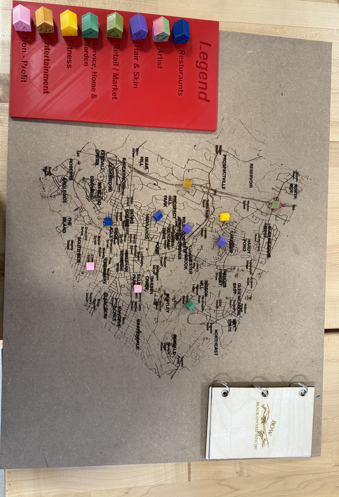
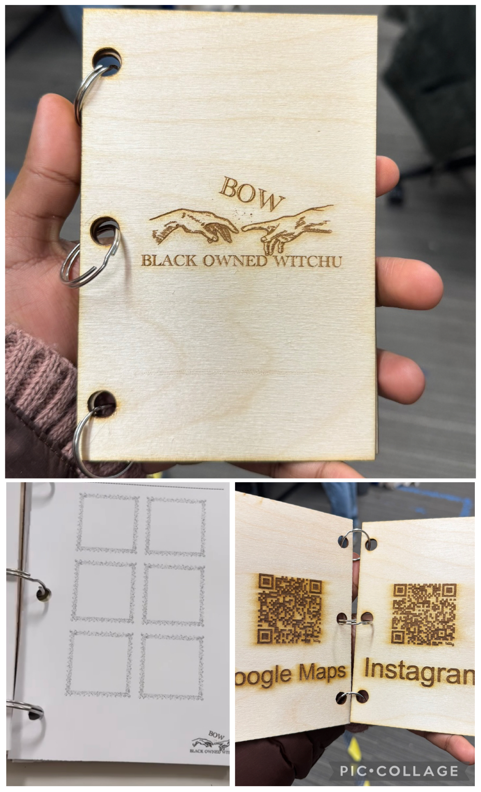

Black Owned Witchu
For my final project, my group and I worked on solving the problem, which was:
The historical and systemic disenfranchisement of Black businesses keeps their awareness suppressed and forces them to increase their prices in order to keep doors open. Furthermore, even if someone wants to take an initiative to actively support Black businesses, consumers struggle to locate them. Establishing a cycle that consistently causes problems for the consumer, which leads to issues for the business, and so on.
In the beginning, we knew that we wanted to make a physical map inspired by a physical map of Waltham that a team member had seen before, except this time it would highlight the B.o.B in the area. People would be able to visit or find new Black-owned businesses and find them on the map in order to make it easier for others to find them too. Over time, this map began to grow in order to make sure that access was at the forefront of our project. We knew that we wanted a physical map because in a world full of technology, it felt nice to be able to hold something.

This is the final prototype of our map. Laser cut on a 2x3 ft piece of MDF. It has all of the streets and important landmarks of Waltham cut into the board, making it extremely visible. We have mini houses placed over the map indicating the different black owned businesses and their accurate location in Waltham. These houses are specifically colored to match the legend on the side, which indicates the type of business that the stores are. Allowing for people who didn't know what type of store they wanted to check out but wanted to support black owned businesses, to narrow down their options based on interest.

However, it then occurred to us that we needed to have a means of accessing this information from more than one location if we wanted it to be legitimately useful. This then brought us to the idea of making a set of QR codes that can be used to access Google Maps, where the businesses have all been pinned. To make these QR codes accessible for people at any location they may be, we decided to create a booklet as well that holds these QR codes, which can be mass-produced. Not only did this solve our final problem, but this booklet also provided people with a checklist for all the businesses, turning it into a fun activity where, at the same time, they are still supporting all these businesses while they check them off one by one.